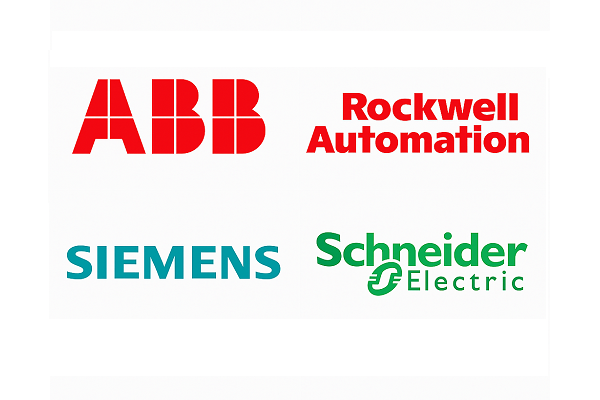
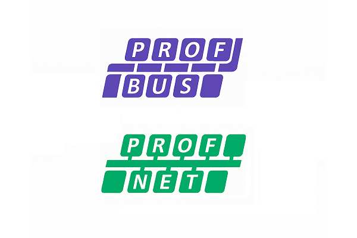
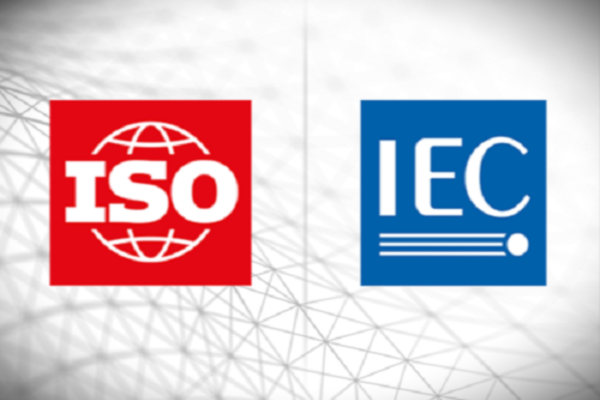

¿Por qué elegirnos?

Ecosistemas Robustos
Trabajamos con las marcas líderes del sector — ABB, Rockwell, Siemens y Schneider — cuya fiabilidad en procesos continuos críticos, ecosistemas robustos, escalabilidad y modularidad respalda nuestras soluciones con la máxima calidad. Además, ofrecen mantenimiento sencillo y cobertura global.

Calidad Garantizada
Nuestras certificaciones, enmarcadas conforme a las normas IEC 61158, IEC 61784-2 y IEC 62453-2/-3, incluyen:
• PROFIBUS
• PROFINET

Nuestro Equipo
Nuestros profesionales cuentan con amplia trayectoria en la industria, diseñando e implementando soluciones de vanguardia para compañías como BHP, SQM, Gold Fields, Candelaria, Codelco y CMPC. Esta experiencia nos brinda un conocimiento profundo para abordar cualquier desafío con foco en la continuidad operativa, mejora continua y seguridad.

Normas y/o Estándares
Nos alineamos con las normas internacionales más exigentes del sector:
• IEC 61158 — Digital data communications for measurement and control.
• IEC 61784-2 — Profiles for real-time networks.
• IEC 61131-3 — Programmable controllers — Programming languages.
• IEC 62453 / 62453-2 / 62453-3 — Interoperability and conformance testing.
• IEC 61508 — Functional Safety of E/E/PE Safety-related Systems.
• IEC 61511 — Safety instrumented systems for the process industry.
• IEC 62443 — Industrial communication networks — Network and system security.
Documentación Técnica
Transformamos necesidades de negocio en soluciones OT listas para operar. Gestionamos la información en repositorios en la nube con respaldo automático y control de acceso.
- Documentación del proyecto (end-to-end):
• Acta de inicio y roles, cronograma Gantt, EDT/WBS, matriz de riesgos, presupuesto.
• Requerimientos y especificaciones.
• Documentación de hardware y de software/configuración.
• Pruebas y validación (FAT/SAT).
• Manuales de operación y mantenimiento.
- Entregables de diseño de solución (diagramas):
• PFD y diagrama de bloques de proceso.
• P&ID (tuberías e instrumentación).
• Diagramas de control (loops) y FBD/SFC.
• Topología de comunicaciones y arquitectura de red.
• Esquemas eléctricos: unifilar, multifilar/wiring.
• Layout de gabinete y diseños HMI/SCADA (mockups).
• Matriz de alarmas y eventos.

Modelos de Gestión
Nuestro equipo trabaja con marcos reconocidos a nivel mundial:
• PMBOK / PRINCE2: Gobernanza y estructura del proyecto de principio a fin.
• Lean Six Sigma: Optimización operativa y mejora continua.
Estas disciplinas aceleran plazos, reducen riesgos y elevan la calidad de cada proyecto.